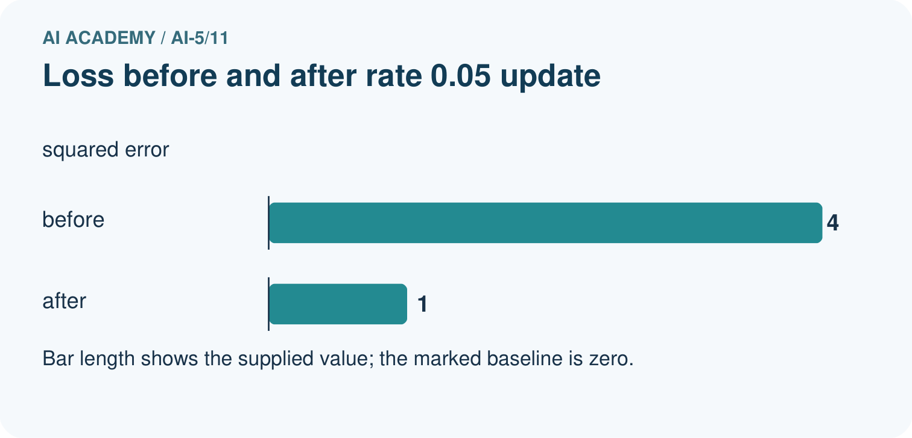
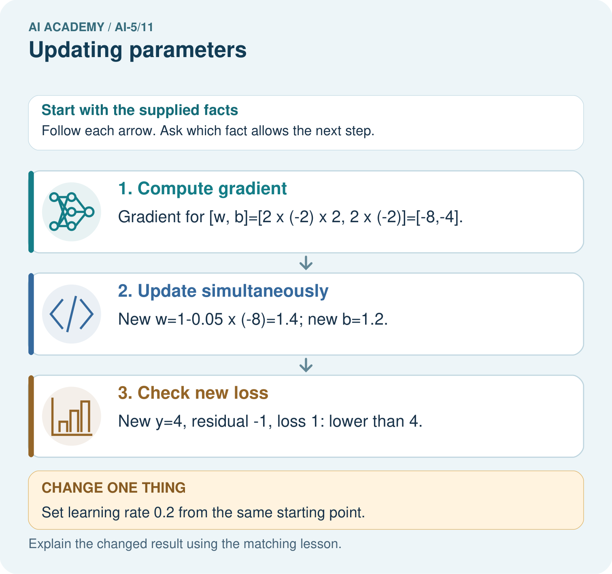
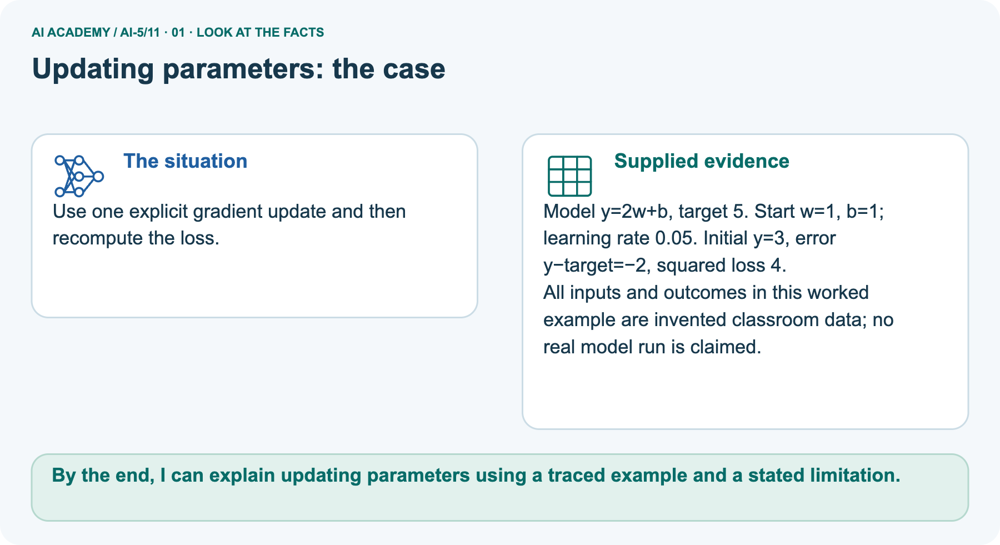
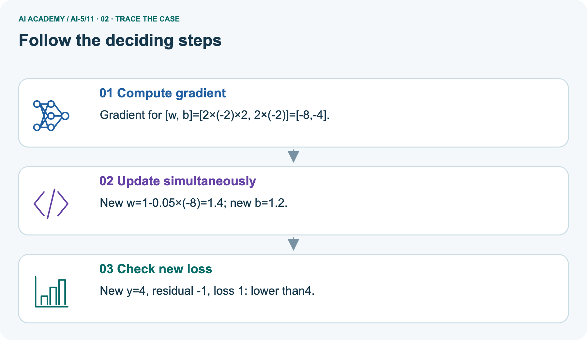
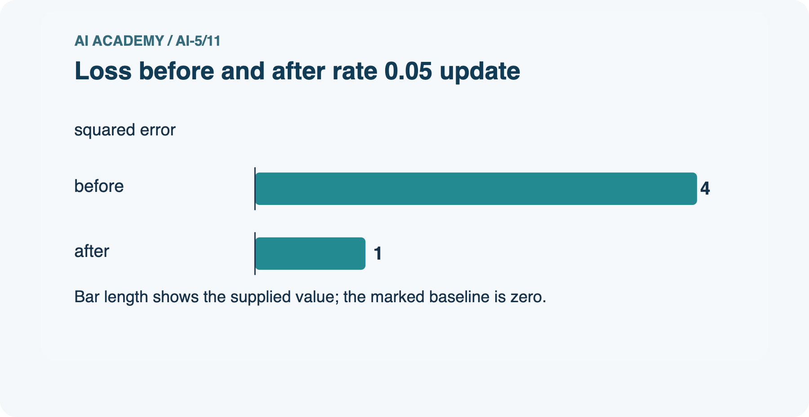
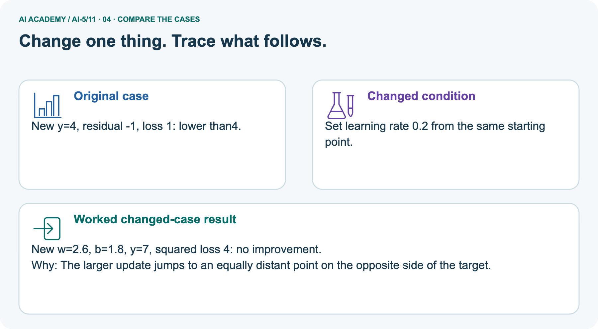

AI Academy · Level 5 · Grade 10 · Week 11 · Student lesson
Updating parameters
Learn to understand, design, build, test and explain AI systems responsibly.
Project: Image-pattern Network Investigation
Before you start
For x = 2, target 3, w = 1 and b = 0, what is the squared-loss gradient in order [w, b]?
Plan time to read, investigate and explain. Keep predictions separate from observations.
Student lesson · 1 of 18
Your mission
Start with the target: Apply a learning rate to an ordered gradient. Try the recall before opening notes.
Your learning target
I can apply a learning rate to an ordered gradient.
I can update all parameters from the same saved state.
I can verify the new loss and identify overshooting.
Remember before reading
Close your notes first. A rough first answer helps us choose the right starting point; it is not a score for your ability.
Without opening the old lesson, explain one key idea from Gradients with a numerical check. Give an example and a mistake that the idea helps you avoid.
Without opening the old lesson, explain one key idea from Loss functions. Give an example and a mistake that the idea helps you avoid.
Without opening the old lesson, explain one key idea from Composing layers. Give an example and a mistake that the idea helps you avoid.
After trying, check the relevant lesson or ask your teacher. Change the part of your explanation that the evidence shows was wrong.
This week you will practise:
Apply a learning rate to an ordered gradient
Update all parameters from the same saved state
Verify the new loss and identify overshooting
Retrieve what you already know
For x = 2, target 3, w = 1 and b = 0, what is the squared-loss gradient in order [w, b]?
This week’s end goal
By the end, I can explain updating parameters using a traced example and a stated limitation.
Student lesson · 2 of 18
Notice the evidence
Investigate the supplied Updating parameters case. Separate observations, given facts and assumptions before choosing an explanation.
Gradient descent uses new parameter = old parameter - learning rate times its gradient entry. The minus sign chooses the locally downhill direction for a positive learning rate.
A negative gradient therefore increases the corresponding parameter.
Keep the Week 10 example: x = 2, target 3, y = 2w + b and L = (y - 3) squared. At [w, b] = [1, 0], the loss is 1 and gradient is [-4, -2].
With learning rate 0.1, new w = 1 - 0.1 times -4 = 1.4 and new b = 0 - 0.1 times -2 = 0.2.
| Quantity | Before update | After update |
|---|---|---|
| Parameters [w, b] | [1, 0] | [1.4, 0.2] |
| Prediction | 2 | 3 |
| Squared loss | 1 | 0 |
This particular step reaches zero loss on one example. It does not establish a unique parameter solution, successful learning on other examples or a generally ideal learning rate.
Student lesson · 3 of 18
See how it works
Follow the mechanism for Updating parameters. Connect each labelled input, deciding step and result.
def step(w, b, rate):
residual = 2 * w + b - 3
dw, db = 4 * residual, 2 * residual
new_w = w - rate * dw
new_b = b - rate * db
new_loss = (2 * new_w + new_b - 3) ** 2
return new_w, new_b, new_loss
for rate in [0.0, 0.05, 0.1, 0.3]:
print(rate, tuple(round(v, 6)
for v in step(1, 0, rate)))Predict the rows: unchanged parameters and loss 1 at rate 0; [1.2, 0.1] and loss 0.25 at rate 0.05; [1.4, 0.2] and loss 0 at rate 0.1; [2.2, 0.6] and loss 4 at rate 0.3.
The helper performs one step on this fixed example; it assumes numeric inputs and does not choose a learning rate for you.
Connect the picture and the explanation
Point to the input, the deciding step and the result in this week’s visual. Explain the same step in ordinary words. A picture helps when you can say what each part represents.
Student lesson · 4 of 18
Compare the cases
Compare the supplied cases for Updating parameters. Identify the detail that changes the conclusion.
Compare a familiar case with a changed case
For the lesson start [1, 0], apply rate 0.3 and calculate prediction and loss.
Change one thing in the pictured case
Change one thing
Change: Set learning rate 0.2 from the same starting point.
Predicted result
Prediction: New w=2.6, b=1.8, y=7, squared loss 4: no improvement.
Why the result follows
Reason: The larger update jumps to an equally distant point on the opposite side of the target.
Student lesson · 5 of 18
Words that unlock the idea
Use the vocabulary of Updating parameters to explain a concrete decision, rather than only memorising definitions.
| Word | Meaning |
|---|---|
| Learning rate | A multiplier that controls the size of a gradient update |
| Gradient descent | Updating parameters in the direction opposite the gradient |
| Simultaneous update | Computing all new parameter values from the same old state |
| Overshoot | A step that moves too far and can increase the objective |
Student lesson · 6 of 18
Follow a worked example
Follow the worked trace for Updating parameters, predict a step, then compare with its explanation.
Use one gradient for one parameter snapshot
Learn from the worked case
Cover the result before checking it. Say what is given, choose the procedure, and follow one step at a time. Then uncover the result and explain your first mismatch. Ask why a step is allowed, not only what number it produces.
A pictorial worked case: Updating parameters
Use one explicit gradient update and then recompute the loss.
The facts we will use
Supplied facts
Model y=2w+b, target 5. Start w=1, b=1; learning rate 0.05. Initial y=3, error y−target=−2, squared loss 4.
Supplied facts
All inputs and outcomes in this worked example are invented classroom data; no real model run is claimed.


Read the picture one step at a time
Why this result follows
Why the result follows
Gradient descent subtracts learning rate times gradient. A negative gradient makes this subtraction increase the parameter. Compute both gradients at the original [w,b] before updating either one.
The small step brings the prediction closer to five, reducing squared error. A larger step can cross the target and undo that gain, so the new prediction and loss must be recalculated.
What this example does not establish
Keep the stated limit
One successful toy update is not evidence of convergence for a real network or generalisation to unseen data.
Keep the stated limit
Read the labelled picture: Why must new loss be recomputed rather than assumed smaller? Point to the relevant step in the picture, then write the changed result and the rule or evidence that supports it.
Keep the stated limit
Change one thing: Set learning rate 0.2 from the same starting point. Predict the result before checking the explanation. What remains the same?
Student lesson · 7 of 18
Find and repair a mistake
Find the unsupported step in the Updating parameters claim and explain a repair using the supplied evidence.
Check the claim against the facts
Suppose a program first changes w to 1.4, then recomputes the bias gradient using new w and old b. Its residual is now -0.2, so its bias gradient is -0.4 and new b becomes 0.04. Prediction becomes 2.84 and loss 0.0256.
That is a different procedure from the declared simultaneous step, even though it also lowered this loss.
An excessive rate can increase loss. At rate 0.3, both coordinates move in the locally suggested direction but prediction jumps to 5 and loss rises from 1 to 4. Always evaluate and record the result.
Later lessons compare learning-rate behaviour across repeated updates.
Locate the earliest unsupported step
Explain why recomputing the bias gradient after changing w is not the simultaneous update specified here.
Student lesson · 8 of 18
Practise together
Practise Updating parameters with support, then explain the deciding step in your own words.
Starting with parameter a = 2, gradient -3 and learning rate 0.2, calculate the new a.
Practise with less help: Detect overshooting
Use workbook W2 for the connected example “Updating parameters”. First fill the input and rule boxes. Try the middle steps before asking for a hint. After a hint, try the next step yourself.
| Plan | Do | Check |
|---|---|---|
| What is given? Which rule or procedure applies? | Record each intermediate step. | Does the result follow? What remains unknown? |
Explain your trace to a partner. Your partner points to one step to check. Swap roles on the next case. Each person writes their own explanation.
Check your reasoning
Use the worked case for Updating parameters. Proposed explanation: “Subtracting a negative gradient decreases the parameter”. Decide whether this explanation is supported.
Point to the step or supplied fact that decides; explain your repair if needed.
Answer on your own before discussion. If you are unsure, say which step you need help with.
Explain the picture
Why must new loss be recomputed rather than assumed smaller? Point to the relevant step in the picture, then write the changed result and the rule or evidence that supports it.
This is supported practice. Keep the separately named independent case for an attempt before feedback.
Student lesson · 9 of 18
Run the investigation
Investigate Updating parameters. Record the prediction, actual observation or labelled paper trace, explanation and next test separately.
Predict, investigate and preserve the evidence
For the lesson start [1, 0], apply rate 0.3 and calculate prediction and loss.
def step(w, b, rate):
residual = 2 * w + b - 3
dw, db = 4 * residual, 2 * residual
new_w = w - rate * dw
new_b = b - rate * db
new_loss = (2 * new_w + new_b - 3) ** 2
return new_w, new_b, new_loss
for rate in [0.0, 0.05, 0.1, 0.3]:
print(rate, tuple(round(v, 6)
for v in step(1, 0, rate)))| Record | Your evidence |
|---|---|
| Given input and fixed rule | |
| Prediction before checking | |
| Actual result, or “not run” | |
| First mismatch and one explanation | |
| Boundary or missing input and expected response |
On paper, trace the supplied procedure. If code is provided, predict before running it in a local practice file. Never write an expected answer as though it were an observed run.
Plan → try → check
Before trying: what do I expect, and why? While trying: which step could first go wrong? Afterwards: what did I actually observe, and what should change? Keep “not run” if you only traced the procedure.
Student lesson · 10 of 18
Build your understanding
Move from recall to tracing, diagnosis and transfer in Updating parameters. Explain why each step is justified.
Explain → apply → challenge
Starting with parameter a = 2, gradient -3 and learning rate 0.2, calculate the new a.
Explain why recomputing the bias gradient after changing w is not the simultaneous update specified here.
At a point with gradient [0, 0], what does this update do? Does that alone prove a global minimum on any loss surface?
Student lesson · 11 of 18
Connect your project
Apply this week’s idea to Image-pattern Network Investigation. Keep an annotated decision and the evidence supporting it.
Add a labelled updating parameters evidence sheet to Image-pattern Network Investigation. Show how you can apply a learning rate to an ordered gradient.
Use the supplied fictional case and keep its inputs, intermediate steps, calculation or prediction, and limitation. Connect this record to last week’s record; a matching answer without a trace is insufficient.
| Project evidence | Record |
|---|---|
| Component and version | |
| Inputs permitted at prediction time | |
| Trace and comparison with earlier work | |
| Failure, limit and human review |
Evidence for your project
For your Image-pattern Network Investigation, save the input, procedure, observed result and limitation of this check.
Label this worked example as practice; use a different, previously unreviewed case when checking independent understanding.
Student lesson · 12 of 18
Show what you know
Use a genuinely new case for independent evidence. Previously discussed examples remain practice; use the separately named independent case before feedback.
A lower loss after a step supports progress on the objective and examples used for that step. It does not show that a model is safe, calibrated or better on unseen data.
Keep the data split fixed and never use final-test labels to compute training gradients.
Next week repeats the forward, loss, gradient and update cycle in a small network with a clearly stated stopping budget.
At a point with gradient [0, 0], what does this update do? Does that alone prove a global minimum on any loss surface?
Student lesson · 13 of 18
Study a complete case
Revisit the complete Updating parameters case for supported practice. Repeated examples do not become fresh assessments.
Complete evidence record
Use one gradient for one parameter snapshot
Follow the input through the stated procedure to its result. Cover the result first, predict it, then explain every intermediate step. The text/table accompanies the figure so the example can be read without colour.
Student lesson · 14 of 18
Try a new case independently
Attempt the reserved new case before feedback. Record support; the earlier examples below remain additional practice.
Independent case: Update a new model independently
Use x = 1, target 4, w = 1, b = 1, squared loss and learning rate 0.1. Compute prediction, residual, gradient [2 times residual times x, 2 times residual], new parameters and new loss.
Attempt this case before feedback. Record any help. Earlier examples below are further practice; a case already practised with feedback cannot establish fresh transfer.
Attempt this without hints
Use x = 1, target 4, w = 1, b = 1, squared loss and learning rate 0.1. Compute prediction, residual, gradient [2 times residual times x, 2 times residual], new parameters and new loss.
Record support used: none, hint or teacher explanation. After feedback, a different case is needed to demonstrate independence.
Use feedback to improve
Attempt the independent case before hints. Record whether you worked alone, used a hint or followed a model. After feedback, fix the first unsupported step and explain why it changed.
A later check uses a changed case, not a copied answer.
Student lesson · 15 of 18
Your lesson route
Use this map to navigate Updating parameters, connect the goals to tasks and keep one evidence record for each attempt.
Start with this question: Use one explicit gradient update and then recompute the loss.
| By the end, I can | How I will show it |
|---|---|
| Apply a learning rate to an ordered gradient | Explain the deciding step, show a trace or test, and state one limit. |
| Update all parameters from the same saved state | Explain the deciding step, show a trace or test, and state one limit. |
| Verify the new loss and identify overshooting | Explain the deciding step, show a trace or test, and state one limit. |
Remember → watch and explain → try with help → investigate → try independently → keep project evidence. Your teacher may spread this lesson across several classes.
Keep your first prediction. Compare it with what the evidence shows and explain any change.
Student lesson · 16 of 18
Finish and return
Explain Updating parameters without notes, identify a remaining question and plan a later check with a changed case.
Close your notes. Explain this goal in your own words: Apply a learning rate to an ordered gradient
If you are unsure, return to the worked picture and explain one arrow. If you are ready, change an input or assumption and justify your prediction.
Save your workbook evidence. At the next review, try a different case before opening your old answer.
Student lesson · 17 of 18
Supported practice, repair and portfolio
Attempt supported questions before using hints or feedback. Review a missing building block, then keep the completed work.
Use this supported practice once, in the browser or on paper. Keep the reserved independent assessment for a separate first attempt before teacher feedback.
Use one explicit gradient update and then recompute the loss.
Practice 1: explain the deciding evidence
Which labelled step matches this detail? New y=4, residual -1, loss 1: lower than4.
1. Check new loss
2. Compute gradient
3. Update simultaneously
Hint · try first
Hint if needed: Read the steps in the pictorial case. Match the supplied detail to the stage that performs or records it.
Feedback · compare after trying
After your attempt, compare with the supported explanation: Check new loss New y=4, residual -1, loss 1: lower than4. Gradient descent subtracts learning rate times gradient.
A negative gradient makes this subtraction increase the parameter. Compute both gradients at the original [w,b] before updating either one. The small step brings the prediction closer to five, reducing squared error.
A larger step can cross the target and undo that gain, so the new prediction and loss must be recalculated.
Practice 2: explain the deciding evidence
Changed case · predict first
Changed-case practice: Set learning rate 0.2 from the same starting point. Which conclusion is supported by the supplied facts?
1. This one example guarantees correct results for every future input.
2. New w=2.6, b=1.8, y=7, squared loss 4: no improvement.
3. We can decide the result without examining the changed input or the procedure.
Hint · try first
Hint if needed: Use the changed condition and the deciding step in the pictorial trace. The answer must say what follows from those facts.
Feedback · compare after trying
After your attempt, compare with the supported explanation: New w=2.6, b=1.8, y=7, squared loss 4: no improvement. The larger update jumps to an equally distant point on the opposite side of the target.
Repair a missing building block
Review Gradients with a numerical check (ai-5/10). Goal: Estimate one partial derivative while other parameters stay fixed. Short practice: Why should the numerical checks perturb one coordinate at a time?
Point to the relevant step in the picture, then write the changed result and the rule or evidence that supports it.. Return to this week and explain what you changed.
Review Loss functions (ai-5/8). Goal: Calculate per-example squared error and mean squared error. Short practice: Why must the report name the chosen loss?
Point to the relevant step in the picture, then write the changed result and the rule or evidence that supports it.. Return to this week and explain what you changed.
Review Composing layers (ai-5/5). Goal: Trace how one layer supplies the next layer inputs. Short practice: What intermediate value explains the changed output?
Point to the relevant step in the picture, then write the changed result and the rule or evidence that supports it.. Return to this week and explain what you changed.
Predict, run and debug
The browser lab lets you edit the supported Python examples already included in this lesson. Predict first, run, inspect the actual output or error, change one input, then run again.
Keep code, predictions, actual results and a reasoned revision together. On paper, label your result as a trace rather than an execution.
Keep your completed work
Use Download completed work in the hosted lesson to export your answers, reflections, practice feedback and code-run evidence. Open the HTML copy to read or print it.
Drafts stay in this browser when storage is available; clear drafts on a shared device.
Student lesson · 18 of 18
Visual concept journey
Explain each Updating parameters graphic using its labels, deciding evidence and relevant limitation.
01. Updating parameters: the case

Use one explicit gradient update and then recompute the loss. Supplied facts: Model y=2w+b, target 5. Start w=1, b=1; learning rate 0.05. Initial y=3, error y−target=−2, squared loss 4.
All inputs and outcomes in this worked example are invented classroom data; no real model run is claimed.
Point to the given fact that matters most. Explain why it matters.
02. Follow the deciding steps

Compute gradient: Gradient for [w, b]=[2×(-2)×2, 2×(-2)]=[-8,-4]. → Update simultaneously: New w=1-0.05×(-8)=1.4; new b=1.2. → Check new loss: New y=4, residual -1, loss 1: lower than4.
Point to each numbered stage and explain which recorded input it uses.
03. Loss before and after rate 0.05 update

Loss before and after rate 0.05 update. Units: squared error. before: 4. after: 1.
Read the labels and values. Explain the relationship the model shows.
04. Change one thing. Trace what follows.

Original case: New y=4, residual -1, loss 1: lower than4. Changed condition: Set learning rate 0.2 from the same starting point. Expected result: New w=2.6, b=1.8, y=7, squared loss 4: no improvement.
Reason: The larger update jumps to an equally distant point on the opposite side of the target.
Predict before checking the worked changed-case result. Name what changed and what the supplied facts allow you to conclude.
05. Connect the explanation to its limit
![Gradient descent subtracts learning rate times gradient. A negative gradient makes this subtraction increase the parameter. Compute both gradients at the original [w,b] before updating either one. The small step brings the prediction closer to five, reducing squared error. A larger step can cross the target and undo that gain, so the new prediction and loss must be recalculated. Limit: One successful toy update is not evidence of convergence for a real network or generalisation to unseen data.](../assets/academy-story-ai-5-11-05.png)
Gradient descent subtracts learning rate times gradient. A negative gradient makes this subtraction increase the parameter. Compute both gradients at the original [w,b] before updating either one.
The small step brings the prediction closer to five, reducing squared error. A larger step can cross the target and undo that gain, so the new prediction and loss must be recalculated.
Limit: One successful toy update is not evidence of convergence for a real network or generalisation to unseen data.
Explain the case, then point to a limit on the claim.
06. Make the idea visible in your project

For your Image-pattern Network Investigation, save the input, procedure, observed result and limitation of this check.
Label this worked example as practice; use a different, previously unreviewed case when checking independent understanding. Draw your input, deciding step, result and limit.
Supported question: Why must new loss be recomputed rather than assumed smaller? Point to the relevant step in the picture, then write the changed result and the rule or evidence that supports it.
Draw your project trace and justify the deciding step using evidence.